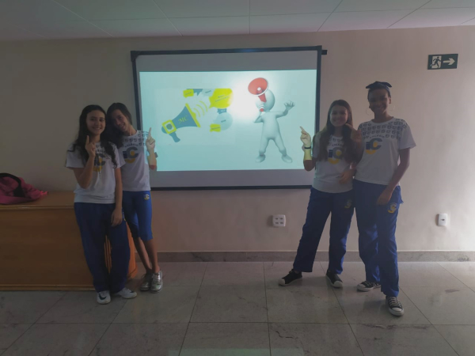

A cultura Maker se baseia na ideia de que as pessoas devem ser capazes de fabricar, construir, reparar e alterar objetos dos mais variados tipos e funções com as próprias mãos.O Projeto Maker foi adotado em 2020 pelo Colégio ICJ com o objetivo de proporcionar a manutenção de um cotidiano escolar para estimular a autonomia, o respeito à diversidade, aumentar a autoestima e a autoconfiança. A proposta faz parte do Projeto Pedagógico do Colégio e está inserida na grade curricular das turmas de 6º ao 8º ano do Ensino Fundamental II. As opções, que podem ser escolhidas pelos próprios alunos, são:
➢ Maker Científico: Os estudantes realizam o cultivo e desenvolvimento de uma horta orgânica;
➢ Maker de Comunicação: Um jornal escolar é criado a partir do conhecimento adquirido ao longo do ano;
➢ Maker Tecnológico: A elaboração de projetos de inteligência artificial é o principal foco desta opção.
Entrevistamos os representantes de cada Maker para saber o que significa para eles. E o que obtivemos com o resultado foi :
Entrevistado(a) : Aline Zagnoli
Representante do Maker de comunicação
Alunos(a) - O que o Maker significa para você?
Aline - "O Maker é uma forma de aprender e se organizar, a ter autonomia e responsabilidade. Em outras palavras e de forma resumida, nada mais é do que “colocar a mão na massa”. Observar problemas, criar hipóteses, fazer testes, validar resultados, corrigir falhas e chegar a conclusões, fazendo grande diferença no cotidiano e vida dos estudantes.
Alunos(a) - Como você se sente em ser a representante do Maker de Comunicação?
Aline - "Sinto-me muito feliz, pois sei que contribuo muito na rotina dos estudantes. Acredito que há uma troca de aprendizagem, vivência e experiência, extremamente válidas para todos nós."

Alunos(a) - Quais as intenções para o Maker de 2022?
Aline - "Ainda não pensei em 2022 rsrs. Os planos que tenho feito são relativos ao ano em curso."
Entrevistado(a) : Viviane Maciel
Representante do Maker científico
Alunos(a) - O que o Maker significa para você?
Viviane - O Maker para mim significa muita coisa, significa tudo, significa uma mudança total e completa naquilo que eu sempre estruturei. Ele me tira da minha zona de conforto, ele me desestabiliza no sentido de que toda semana eu tenho que pensar fora da caixa, pensar diferente. Principalmente nesse sistema remoto, que eu trabalho muito mais. Esse desenrolar quando eu falo do Maker científico a nossa ideia não é o produto final é o processo, eu como o que eu estou executando. Isso tudo porque o resultado final é consequência de algo que eu estou fazendo durante esse percurso.
Alunos(a) - Como você se sente em ser a representante do Maker Científico?
Viviane - "Eu me sinto lisonjeada, me sinto feliz. Eu não estou pronta e nem 100% qualificada, mas eu considero que eu busco o saber, eu estudo e tento aprimorar. Eu sinto que houve confiança naquilo que eu pretendia pensar e fazer. As pessoas apostaram e a gente acreditou juntos. Quando me refiro à "a gente" quero dizer a equipe, porque eu não trabalho sozinha, tem todo um compartilhar, há um envolvimento, é um trabalho em equipe, em conjunto."
Alunos(a) - Quais as intenções para o Maker de 2022?
Viviane - As ideias para o Maker de 2022 são inovações. Eu não gosto de pensar no outro ano já que ainda estamos em 2021, mas nessa segunda etapa eu já estou com um movimento de ideias na minha cabeça. Então eu penso que as minhas ideias são fortes agora em 2021 e em 2022 eu estarei mais bem estruturada em relação a 2021.
Entrevistado(a) : Pablo Carvalho
Representante do Maker tecnológico
Alunos(a) - O que o Maker significa para você?
Pablo - O meu trabalho no Maker já era um projeto existente uma vez que eu abri a sala para aqueles alunos que tivessem ideias e quiserem construir e criar alguma coisa. O maker para mim significa liberdade em si, liberdade para criar, para construir, para desenvolver. Traz um significado maior porque eu vi esse projeto do Maker crescendo, até virar hoje uma disciplina igual as outras. É muito importante saber que o que deu início a isso tudo foi a forma como eu estava trabalhando com os alunos e a direção enxergou isso e achou importante trazer para o colégio ICJ.
Aluno(a) - Como você se sente em ser o representante do Maker tecnológico?
Pablo - Eu fico muito feliz, a divisão dos Makers é puramente didática, querendo ou não vocês do Maker de comunicação trabalham no maker de tecnologia, o pessoal do Maker científico trabalha no maker de tecnologia e vise-versa. A ideia do maker é essa, eu me sinto parte de um grupo
Alunos(a) - Quais as intenções para o Maker de 2022?
Pablo - Eu não tive uma ideia para o ano que vem porque eu estou aguardando se teremos um retorno ou não. A diferença entre o Maker online e de forma presencial é gigante. Os projetos que eu tenho em mente para o maker presencial estando ali, com a mão na massa envolve uns equipamentos de robótica do colégio, a impressora 3D do colégio, um conjunto de atividades com os outros makers, principalmente o científico.